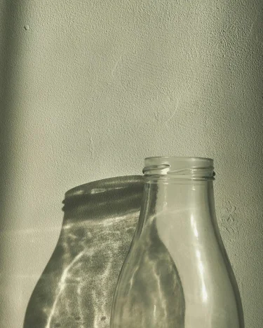
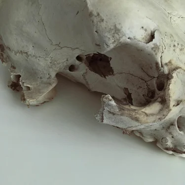

Vice squad
Перспективный чувачочек — это всё про меня. Обладаю враждёбным чувством стиля, умею дышать, видеть глазами, читать. Кто так умеет? Пока никто. Завтра будет лучше, чем вчера, или до завтра. Пока. Всем пока, я ещё тут.
Эта фотография сделана была не вами, а мной. Пока вы спите, где-то ходите, занимаетесь бездумными делами, я в это время сижу. Или плету косички самурайскому отряду по борьбе с килиманджарскими пряниками. Хороших выходных и свадеб, выдры!
Service is real
Могу вам помочь, если на то будет время. По вам видно, что вам нужна помощь. Святой Алюминий, что я у вас есть. Чекай мой профайл, аматор(-ша). Вообще, листовки о своих услугах было лень раздавать, так и появился мой сайт.


Если уже гудят трубы и мочевой не выдерживает нагрузки радости, что вы встретили меня, не спешите симулировать восхищение, готовьтесь его стимулировать. Мои контакты в самом низу странички. Шо? Каво? Кия!